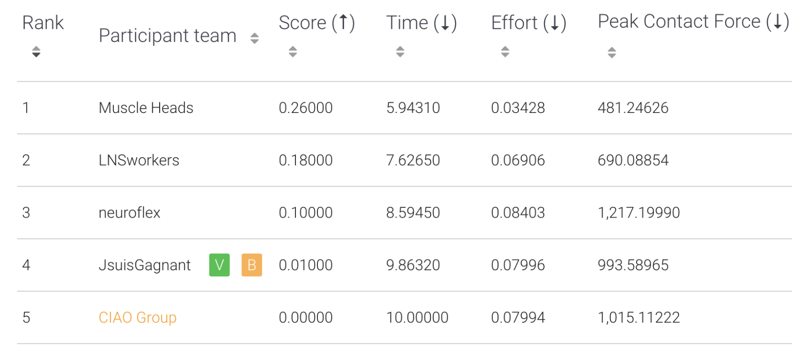

MyoChallenge 2024: A New Benchmark for Physiological Dexterity and Agility in Bionic Humans
First Place ($2,000 prize)
Our team, Muscle Heads, came first place in the Manipulation Track of the NeurIPS 2024 MyoChallenge competition. The challenge involved coordinating a biologically-realistic human arm with 63 muscles and a robotic arm with 17 DoFs to transfer objects between pillars. To control the musculoskeletal arm, I developed a novel algorithm to learn low-dimensional control manifolds in high-dimensional action spaces. This allowed us to efficiently acquire dexterous reaching and grasping skills. To control the robotic prosthetic arm, we combined a learned policy with inverse kinematic control, enabling smooth hand-offs and object relocation. Curriculum learning and reward shaping were used to solve the task in stages (reach, grasp, handover, move object to goal) .

